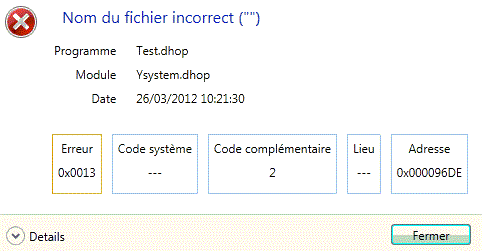

La fenêtre d'erreur standard affiche les éléments suivants :

Titre
Le bandeau de la fenêtre contient l'icone Harmony, un texte facultatif fourni par le programme appelant suivi du numéro de tâche et de la version d'Harmony.
Icone et texte de l'erreur
Si l'erreur est fatale, l'icone "Stop" est affichée. Si l'erreur n'est pas fatale, l'icone "Point d'exclamation" est affichée.
En regard de l'icône, est affiché un texte explicitant l'erreur. Ce texte est généralement composé automatiquement par Harmony en interprétant les codes d'erreur. Il peut également être composé totalement ou partiellement (dans ce cas, les codes sont toujours interprétés) par le programme appelant.
Programme, module et date
Ensuite, sont affichés le nom du programme principal, le nom du module courant, plus la date et l'heure (zones garnies automatiquement).
Si le module courant est le programme lui-même, son nom n'apparaît pas.
Codes d'erreur
Ensuite, sont affichés trois codes d'erreurs, un code de lieu et une adresse. Voir plus loin le détail concernant ces valeurs.
Bouton Détails
Ce bouton permet d'afficher le contenu de la pile des fonctions.
Valeurs des codes d'erreur
Si un code d'erreur est automatiquement interprété, la valeur est affichée dans un cadre en orange.
Erreur
Code "application" de l'erreur (en hexadécimal). Ce code est un code spécifique à l'application (ou au module système) qui affiche l'erreur.
Exemple : 0Axx pour les erreurs réseau, 16xx pour les erreurs Diva, …
Code système
Ce code hexadécimal est utilisé en complément de Erreur. Erreur indique l'application et Code système est la valeur renvoyée par la fonction Harmony de base. Si l'application n'a pas de code Erreur spécifique, on placera le valeur de retour de la fonction Harmony directement dans Erreur et on laissera Code système à 0.
Code complémentaire
Ce code contient l'erreur rendue par le système d'exploitation (Windows, Unix, ...). Il peut être récupéré par la fonction GetErrno.
Lieu
Ce code est utilisé pour localiser exactement l'erreur. En effet, une même erreur peut se produire à différents endroits d'un même programme. En affichant un code Lieu différent à chaque fois, la localisation de l'erreur est simplifiée.
Adresse
Cette zone est automatiquement garnie et représente l'adresse dans le programme Diva. Pour retrouver la ligne correspondante dans le source, il faut compiler le source avec l'option L.
Interprétation des codes d'erreur
Les codes d'erreur standard d'Harmony (et uniquement ceux-ci) peuvent être automatiquement interprétés pour donner le texte d'une erreur. Par exemple, l'erreur 0x0014 génère le texte "Fichier …. absent ou inaccessible".
Un seul code d'erreur est interprété à la fois. On tente tout d'abord d'interpréter le Code système ; en cas d'échec on tente d'interpréter le code Erreur ; en cas de nouvel échec, on affiche le texte "Erreur xxxx" (où xxxx est le code Erreur).